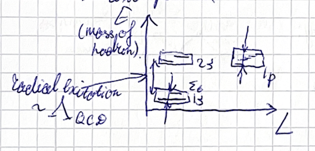
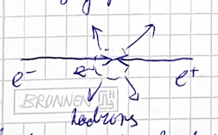
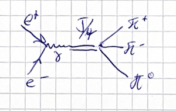
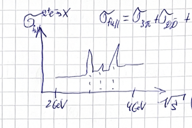
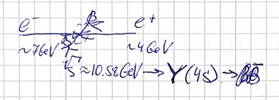
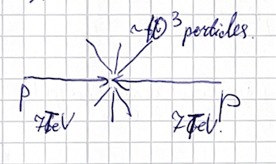
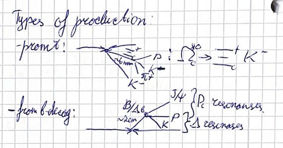
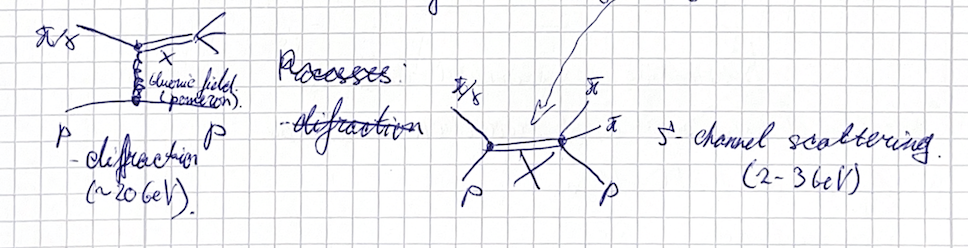
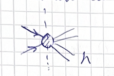
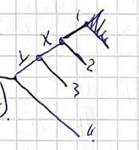

(2024) Lecture 4
Presenter: Mikhail Mikhasenko
Note Taker: Ilya Segal
1 Magnetic Moment of Omega Baryon and Excitation Pattern of Sigma_b Baryon
1.0.1 Recap and Two Questions
Today’s lecture covers spectroscopy experiments and the computation of kinematics for those experiments. A short recap of the last lecture leads to two questions.
Question 1: Compute the magnetic moment of the Omega baryon in the current model. Question 2: Compute the lowest 1s excitation multiplet of the Sigma_b baryon.
1.0.2 Question 1: Magnetic Moment of the Omega Baryon
1.1 Parton Content and Wave Function
The Omega baryon consists of three strange quarks. The total wave function is always a product of four factors, but not necessarily a direct product. It lives in the tensor product space of color, coordinates, isospin, and spin. Color factors out, flavor is trivial, so only the spin part matters.
The Omega has total spin ** J^P = \frac{3}{2}^+ **. The maximal spin state is |s\uparrow s\uparrow s\uparrow\rangle = \left|\frac{3}{2}, \frac{3}{2}\right\rangle.
Its multiplicity is 4, corresponding to the four projections of J = 3/2 . Acting with the lowering operator on this state yields the symmetric combination \frac{1}{\sqrt{3}}\bigl( |d,u,u\rangle + |u,d,u\rangle + |u,u,d\rangle \bigr).
However, to compute the magnetic moment, it is sufficient to use the maximal state because the operator \mu_z is diagonal on it.
1.2 Computation of the Magnetic Moment
The magnetic moment operator is \vec{\mu} = g \frac{e}{2m} \vec{S}, \qquad \mu_{\Omega} = \mu_{s1} + \mu_{s2} + \mu_{s3}.
For each strange quark, \mu_s = \frac{e}{2m_s}, \qquad \mu_{s} |s\uparrow\rangle = \frac{1}{2}\frac{e}{m_s} |s\uparrow\rangle.
Since the strange quark has charge -e/3 (in units of e ), the full expression is \mu_{\Omega} = \langle s\uparrow s\uparrow s\uparrow| \sum_i \mu_{s,i} |s\uparrow s\uparrow s\uparrow\rangle = -\frac{e}{2m_s}.
The strange quark mass is m_s \approx 500\ \text{MeV} , so the magnetic moment is about 1000 times smaller than the electron’s (which has mass 0.5 MeV). The Omega itself has a total charge of -e ; its mass is roughly 3 m_s \approx 1500\ \text{MeV} .
1.2.1 Question 2: Excitation Pattern of the Sigma_b Baryon

1.3 Ground State
The Sigma_b baryon consists of a light diquark in a spin-1 configuration and a heavy bottom quark with spin 1/2. Their combination gives two ground-state (S-wave) possibilities:
- J^P = \frac{1}{2}^+
- J^P = \frac{3}{2}^+
1.4 Isospin Partners (Bonus)
The isospin of the Sigma_b is I = 1 , leading to three charge states:
| Particle | Quark content | Charge |
|---|---|---|
| \Sigma_b^+ | uub | +1 |
| \Sigma_b^0 | udb | 0 |
| \Sigma_b^- | ddb | –1 |
Acting with the isospin lowering operator reduces the charge by one unit. All three families have nearly identical properties because isospin breaking is tiny.
1.5 Excitation Spectrum
In the excitation spectrum diagram, the x-axis typically shows orbital angular momentum L and the y-axis shows energy (rest mass). For heavy quarks, radial excitations (e.g., 1s → 2s) are much larger than hyperfine splittings. Energy differences from combining spins are suppressed by 1/M_Q .
| Block | Orbital L | Parity | Total spin from diquark+heavy | Resulting J | Multiplicity |
|---|---|---|---|---|---|
| S-wave | 0 | + | S = 1 + 1/2 | 1/2,\ 3/2 | 2 |
| P-wave | 1 | – | Combine L=1 with S=1/2 | 1/2,\ 3/2 | 5 |
| Combine L=1 with S=3/2 | 1/2,\ 3/2,\ 5/2 |
The P-wave block contains 5 states in total. These states are listed in the PDG; historically, the first excited states of the Sigma_b were only discovered about 10 years ago (around 2012) by collider experiments.
1.6 Energy Splittings
The radial excitation scale is set by \Lambda_{\text{QCD}} \sim \text{few hundred MeV} . Within a given orbital block, the hyperfine splitting from the heavy quark spin is suppressed by 1/M_Q . The spin-orbit splitting enters as \Delta \sim \frac{\Lambda_{\text{QCD}}}{M_Q} \vec{S} \cdot \vec{L}.
For a bottom quark with M_Q \approx 4\ \text{GeV} , \Lambda_{\text{QCD}} / M_Q \sim 0.1 , so the splitting between, e.g., \Sigma_b(3/2) and \Sigma_b(1/2) is of order 10 MeV.
2 Experimental Approaches to Hadron Spectroscopy
2.0.1 Kinematics and Experimental Techniques
The experimental study of hadrons has been extremely vibrant in the last 10 years. Discoveries began around 2004 with the first exotic particles appearing. Since then, new observations of states that do not fit a simple meson–hadron model have been made every few months. Many experiments now dedicate part of their programs to studying hadrons, especially exotic ones. Across the world, several large laboratories study particle collisions and hadrons.
One central puzzle is understanding the very fabric of matter: how hadrons form, which combinations are possible, and what rules determine the excitation pattern and properties of different levels. Quantum chromodynamics (QCD) is the theory of strong interactions; it describes strong interactions well enough, but only to the extent that we can compute. So far, there has been no success in classifying and predicting large multiplets of exotic states. We observe a particle and would like to relate and predict its properties, but we cannot.
This limitation arises partly from our computational methods. Lattice QCD works well for ground states but cannot provide computations of the large scale required for multiplets. The theory is also complicated, with many emerging phenomena. The Lagrangian shows quarks and gluons, but these are not the degrees of freedom relevant for hadrons. Moreover, we seem to face a transition of matter: from configurations where quark degrees of freedom are important (hadrons formed by quarks) to configurations where the hadrons themselves are important and form atoms.
In hadron spectroscopy, one faces a border region: a mixture of hadrons made of elementary quarks and larger objects—atoms where hadrons bind into bigger objects. Some hadrons are complicated precisely because their properties come from a mixture of configurations. Some properties require a compact hadron, others require a sparse molecule (hadronic molecules). Lattice QCD cannot yet help much in this border region, so experiments must provide new data and insight.
We understand hadron properties by measuring their decays and observing them in new decay configurations. Another approach is to measure the same decay of the same hadron using different production mechanisms. Many labs explore different production mechanisms.
2.0.2 Experimental Approaches
2.1 Electron–Positron Collisions
The Belle experiment in Japan and the BES experiment in China use electron–positron collisions:
e^+ + e^- \rightarrow \psi \rightarrow \text{hadrons}, \quad \sqrt{s} \sim 2\text{–}4 \,\text{GeV}
At Belle, the electron is at 7\,\text{GeV} and the positron at 4\,\text{GeV} , giving \sqrt{s}=10.58\,\text{GeV} , which produces \Upsilon(4S) \rightarrow B\bar{B} . The leptons annihilate, producing an intermediate state that then decays.
2.2 Proton–Proton Collisions (CERN)
CERN colliders use proton–proton collisions. The large, energetic conglomerates of quarks and gluons produce many particles, including long-lived particles with heavy quarks like B and D mesons. These live long enough to travel from the production point, providing a clean environment to study hadrons. The B or D meson is produced, flies a few millimeters, and is tracked by detectors, allowing distinction between the primary and secondary vertices.
2.3 Fixed-Target Experiments
Another class of experiments uses hadronic production: essentially shooting a hadron at a hadron without exclusive kinematic description. These are mostly fixed-target experiments.
| Experiment | Facility | Beam | Target |
|---|---|---|---|
| GLUEX | Jefferson Lab | Photon beam | Hydrogen |
| COMPASS | CERN | Pion beam | Hydrogen |
In both, the target is at rest, and the beam particle gets excited or scatters off the target. This provides another way to study hadrons using different production mechanisms.
2.4 Lattice QCD
A third major way to study hadrons is to compute their properties from lattice QCD. A large amount of information comes from this method.
Summary of production mechanisms:
| Mechanism | Example experiments | Key features |
|---|---|---|
| e^+e^- annihilation | Belle, BES | Controlled \sqrt{s} ; clean initial state |
| pp collisions | LHC (CERN) | High energy; heavy-quark hadrons travel detectable distances |
| Fixed-target hadronic scattering | GLUEX (photon), COMPASS (pion) | Target at rest; beam momentum varied |
3 BES Experiment: Charm and Tau Hadron Studies at a Symmetric Collider
BES experiment (Beijing Spectrometer) is located at the BEPC (Beijing Electron Positron Collider). It is a symmetric collider: the electron and positron have the same energy.
The experiment is dedicated to studies of hadrons in the charm and tau region.


When the electron and positron collide, they can annihilate, producing a virtual photon that couples to hadrons. The electron has spin‑1/2; at high energy its helicity is fixed. Combining two spin‑1/2 particles gives total spin 0 or 1, but helicity and the particle‑antiparticle nature restrict the possibilities. For a lepton‑antilepton collision the total spin can only be 1, so spin‑0 states cannot be produced.
The parity is determined by combining the particles: a spin‑1/2 minus and a spin‑1/2 plus in an S‑wave. Therefore the experiment explores hadrons with quantum numbers 1^{--} .
| Property | Value |
|---|---|
| Initial state | e^+e^- (spin‑1/2 each) |
| Total spin allowed | 1 only (spin‑0 forbidden) |
| Parity derived from | spin‑1/2 minus + spin‑1/2 plus in S‑wave |
| Resulting quantum numbers | J^{PC} = 1^{--} |
The experiment operates as follows:
- Data are collected by setting the beam energy at a specific resonance, for example the J/ψ peak.
- The cross section as a function of energy is not homogeneous; it has peaking structures.
- The cross section increases when the system can resonate at a certain frequency — those resonances are hadronic states.
- Adjusting the collision energy to produce an intermediate resonance increases the probability and makes the cross section larger.
- In the first operation mode, the size of the cross section tells how often interactions occur and increases the collected data.
- Therefore it is common to choose a resonance (such as the J/ψ) and set the energy to that peak, or to a sideband for background studies.
4 The J/ψ, Charmonium Spectrum, and Scan Operation Modes
4.0.1 Charmonium Spectrum (see Figure 1)
The charmonium spectrum is plotted with:
- X-axis: quantum numbers (orbital excitations)
- Y-axis: energy, lowest state at the bottom
The multiplicity is obtained from quark algebra. The lowest-lying multiplet contains the J/\psi , \psi(2S) , and \eta_c(2S) — the higher-energy state is called \psi , the lower-energy state \eta_c . The two highest states in the multiplet are the same particles, denoted with a “2S” in parentheses.
| State | Quantum Numbers & Comments |
|---|---|
| J/\psi | 1^{--} , first discovered charmonium |
| \psi(2S) | Excitation of J/\psi , often called \psi(2S) |
| \eta_c(2S) | Lowest state in the multiplet |
| \chi_{c0} , \chi_{c1} , \chi_{c2} | 0^{++} , 1^{++} , 2^{++} states in the P‑wave multiplet |
4.1 Why “J/ \psi”?
The name J/\psi originates from history: several groups discovered the particle concurrently, and the “J” stands for one of the researchers (the lecturer declines to name them). The J/\psi is a very clear peak in the spectrum of
e^+ e^- \rightarrow \psi \rightarrow \text{hadrons}, \quad \sqrt{s} \sim 2\!-\!4\ \text{GeV}.
Because it has quantum numbers 1^{--} , it is easy to produce via e^+e^- collisions, selecting by quantum numbers from helicity conservation.
The second peak in the spectrum is the \psi(2S) (no extra name is needed; it can simply be called \psi(2S) ). The \eta_c(2S) is the lowest state of the same multiplet. The P‑wave multiplet states are the \chi_{c0} , \chi_{c1} , \chi_{c2} , corresponding to 0^+ , 1^+ , 2^+ respectively.
4.1.1 Operation Modes
Two main modes of data collection are used:
4.2 1. Sitting at the Resonance Peak

Collect data at the J/\psi peak. Billions of reactions are on tape — e^+e^- \rightarrow J/\psi \rightarrow something. (see Figure 3) This large data set is then explored.
4.3 2. Scanning
The beam energy is tuned to measure the cross section. For example, one week at one energy point, then a few weeks per point, collecting large data sets that represent the full cross section.
The full cross section is a combination of all possible sub‑cross sections, e.g., for e^+e^- going into two particular systems. This splitting provides extra information—some resonances become more visible in specific decay kinematics.
When analyzing the data, researchers choose a particular final state (e.g., e^+e^- \rightarrow two or three pions) and a data set from one scan point, then study the hadron properties in that configuration.
5 Belle II: Asymmetric Beam Energies for B Meson Vertex Separation
Belle II is an experiment at the KEK laboratory in Japan, operating with an electron–positron collider.

Its primary goal when built was to study CP violation, but the data also proved extremely useful for hadron spectroscopy. It is the successor to the Belle experiment; after the upgrade the collider is called SuperKEKB.
In contrast to the BaBar experiment, the colliding beams are not symmetric. The center‑of‑mass energy is adjusted to a specific resonance. The experiment uses an electron beam of 7\ \text{GeV} and a positron beam of 4\ \text{GeV} , resulting in \sqrt{s}=10.58\ \text{GeV} .
e^- \xrightarrow{7 \text{ GeV}}, \quad e^+ \xrightarrow{4 \text{ GeV}}, \quad \sqrt{s} = 10.58 \text{ GeV} \Rightarrow \Upsilon(4S) \rightarrow B \bar{B} (see Figure 2) (see Figure 4)
This energy corresponds to the \Upsilon(4S) resonance, which decays primarily to a B\bar{B} pair. Since the main goal was to study B mesons and CP violation, the experiment operates at this resonance.
When the center‑of‑mass energy equals the \Upsilon(4S) mass, the resonance is produced and decays immediately, resulting in a primary vertex. The short‑lived resonance decays to the B\bar{B} pair, enabling studies of CP violation (to be discussed in later lectures).
| Parameter | Value |
|---|---|
| Electron beam energy | 7\ \text{GeV} |
| Positron beam energy | 4\ \text{GeV} |
| Center-of-mass energy | \sqrt{s}=10.58\ \text{GeV} |
| Resonance produced | \Upsilon(4S) |
| Primary decay mode | B\bar{B} pair |
The asymmetry in the beam energies is a deliberate design choice. The purpose is to give the B mesons a larger boost, increasing their flight distance from the primary vertex and improving identification. If the B mesons were produced at rest, they would not travel far. The asymmetric beam energies create a net boost of the system — the entire \Upsilon(4S) is boosted in the direction of the electron beam due to energy conservation.
B mesons from the \Upsilon(4S) decay then acquire significant longitudinal momentum, larger than they would have without the boost. They live longer in the laboratory frame and fly a larger distance from the primary vertex. By precise reconstruction of tracks, one sees that the charged tracks do not point back to the primary vertex; they point away from it. This allows identification of the secondary vertex. The traveled distance depends on the particle’s momentum, providing an additional handle to separate vertices.
The boost from asymmetric beam energies enables the displacement of B meson decay vertices, which is essential for measuring CP violation.
6 From Belle II to LHCb: Hadron Spectroscopy and Production Mechanisms
To reconstruct the schematics before moving away from Belle II: the process is e^+ e^- annihilation. (see Figure 2) The total cross section of e^+ e^- to everything is measured.
Charmonium and bottomonium (see Figure 4)
| Property | Charmonium ( c\bar{c} ) | Bottomonium ( b\bar{b} ) |
|---|---|---|
| Typical energy | 2–4 GeV (KEK) | ~10 GeV (Belle II) |
| Hyperfine splitting ( \eta –vector mass) | Larger | Smaller |
| Level spacing | ~few hundred MeV | ~few hundred MeV (same scale) |
| Condensation within blocks | Less squeezed | More condensed (energy levels more compact) |
Belle II sits at the bottomonium region. The vector particle of bottomonium is called the Upsilon ( \Upsilon ), with quantum numbers J^{PC}=1^{--} – the analogue of the J/\psi in charmonium. (see Figure 5) Scanning energy: first J/\psi appears, then \Upsilon(1S) , \Upsilon(2S) , \Upsilon(3S) , \Upsilon(4S) . Belle II operates at the \Upsilon(4S) resonance.
e^- (7\ \text{GeV}),\; e^+ (4\ \text{GeV}) \;\Rightarrow\; \sqrt{s}=10.58\ \text{GeV} \;\Rightarrow\; \Upsilon(4S) \rightarrow B\bar{B}
All \Upsilon states are above 9 GeV; \Upsilon(1S) mass is 9.46 GeV.
Proton–proton collisions at LHC are much messier. The energy is hundreds of GeV, collisions are not annihilation, and the beam remnants (quarks and gluons) are boosted; the typical energy scale is TeV.

Q: What’s your guess for the multiplicity in a proton–proton collision? 10? 20? Hundred thousand? 10,000? A (audience): 100. A (lecturer): Okay, 5,000. Cancel 10,000, 8,000, 8,000. You seem to have a good order of magnitude. So it is around a thousand particles per collision.
The p_T spectrum follows an exponential fall: many low‑energy particles and a tail to high energy. Typical particle energy is hundreds of GeV; even if the total energy is shared among ~1000 particles, each gets ~7 GeV, but most have low momentum.
LHCb exploits the high pp cross section to study new hadrons. Two main production mechanisms:

| Feature | Prompt production | Production from B decays |
|---|---|---|
| Vertex | Primary vertex | Secondary vertex from B/\Lambda_b |
| Lifetime of particle | Not applicable (resonance) | B/\Lambda_b : \sim 10^{-9} s |
| Typical flight distance | — | ~2 cm |
| Example | \Omega_c from cascade– K | Pentaquarks from \Lambda_b\to J/\psi\,p\,K |
Prompt production: Your particle of interest originates at the primary vertex. Example: observation of \Omega_c variants and \Xi_c^{**} variants via the cascade– K combination. The cascade (ground state of the cascade multiplet) decays weakly with \tau\sim 10^{-10} s; at 100 GeV boost it flies a few millimeters, producing a secondary vertex ~5–6 mm from the primary. Reconstruct the secondary vertex with charged particles (proton, kaon, etc.) and combine with kaons to form the invariant mass of cascade– K . Bumps correspond to excited \Omega_c states. \Omega_c is ssc ; cascade is suc ; K is s\bar{u} .
Ground‑state charm and bottom hadrons decay weakly, giving lifetimes of 10^{-10} –$10^{-9} $s. At LHC boosts they produce secondary vertices separable from the primary vertex – millimeters for charm, centimeters for bottom.
Production from$ B$ decays: Ground‑state b -hadrons ( B mesons, \Lambda_b ) decay weakly with \tau\sim 10^{-9} s. Boosted, they travel ~2 cm before decaying. Clean kinematics: reconstruct final‑state particles, measure flight length and momentum, and observe isolated decays. Resonances appear in the decay products.
Pentaquark discovery example: \Lambda_b\to J/\psi\,p\,K (three‑body decay).
- In the p\,K invariant mass, bumps correspond to \Lambda resonances.
- In the p\,J/\psi invariant mass, unexpected resonating peaks appear – the P_c pentaquarks ( uud\,c\bar{c} combinations).
7 Fixed-Target Experiments: Diffraction vs. s‑Channel Scattering
Let us survey fixed-target experiments and the techniques used, with three examples.
| Experiment | Facility | Beam | Target | Energy | Physics Focus |
|---|---|---|---|---|---|
| GlueX | Jefferson Lab | photon (9 GeV) | liquid hydrogen | 9 GeV | Light-hadron spectroscopy; operates in the regime between diffraction and s‑channel, with coherent interference between both processes. |
| COMPASS | CERN | pions | liquid hydrogen | intermediate | Light-hadron spectroscopy (protons, kaons, light mesons); studies baryonic excitations by separating diffraction and s‑channel production. |
| Bonn | Bonn | photon | (target?) | 2 GeV | Light-hadron spectroscopy, no bottom or charm; currently in R&D stage. |
- GlueX and COMPASS both study light hadrons, but with different setups, beams, and energies.
- COMPASS separates the regimes of diffraction and s‑channel production. They excite resonances and then study their decays.
- GlueX (still running, in its last years) has ideas for an upgrade (GlueX II) to study more hadron spectroscopy.
- The Bonn setup is in the R&D stage.
Two different mechanisms are involved in fixed-target experiments at intermediate energy (not TeV scales): (see Figure 6) (see Figure 7)

- Diffraction: The proton acts as a source of the strong‑interaction field (a gluonic field). The beam particle (pion or photon) interacts with that field and becomes excited. The excited state (labeled “X”) is the beam’s excited state; it “flies” for a short time and decays. In strong interactions, light hadronic resonances live about 10^{-25}\ \text{s} , which at these energies is too short to move away from the primary vertex. (see Figure 3) In diagrams we sketch them as separate particles.

The exchanged object (described by gluon operators) is called the pomeron – not a real particle, but a phenomenological description of the gluon field.
- s‑channel scattering: Occurs when the proton and the beam particle can resonate at a certain frequency. This is what happens at 2–3 GeV.
At higher energy, there are no frequencies at which the system can resonate; diffraction becomes more plausible. COMPASS separates these two regimes.
At 9 GeV, GlueX does not isolate one process; it lies somewhere in between. Both diffraction and s‑channel occur, and there is coherent interference between them. Ideally one would have slightly higher energy to isolate one process, but in practice everything that can happen does happen, and both kinematics must be handled.
Q: You said they interact via gluons. Is that a direct or indirect interaction?
A: One can see that there is a layer of gluons. Since the proton is color‑neutral, it cannot exchange a single gluon; the proton must remain color‑neutral. The object that is emitted is not a single gluon but a gluonic field that is color‑neutral. We call this diffraction rather than gluon exchange because it is something special. This process is not well understood in terms of individual gluons; it is understood physically: the proton sits and emits a gluonic field, and the interaction is analogous to light scattering off an object and producing a diffractive pattern. The proton acts as a black disk, and we see a diffractive pattern on the wall. The exchanged object – described by gluon operators – has a name: the pomeron. You do not find the pomeron in the PDG; it is not really a particle, but rather a phenomenological way to describe the gluon field.
8 Counting Kinematic Variables and Phase Space
8.1 Exclusive vs. Inclusive Reactions
- Exclusive process: all final-state particles are measured and accounted for. Can be 1‑to‑n or 2‑to‑n (here 2‑to‑n for scattering).
- Inclusive process: the system of interest is produced together with many other particles that are not measured. Opposite of exclusive.
8.2 Counting Kinematic Variables for a 2‑to‑3 Process
In a diagram, the blob represents the interaction, and the lines represent incoming or outgoing particles.
To count the number of independent kinematic variables:
Particles: 2 initial + 3 final = 5 particles. Each particle has a 4‑vector (4 components) minus one mass‑shell constraint → 3 independent components per particle. Total independent components: 5 \times 3 = 15 .
Energy‑momentum conservation: \delta^4\!\left(\sum p_f - \sum p_i\right) imposes 4 constraints. Subtract 4 → 15 - 4 = 11 kinematic variables describing the process in any frame.
Fix a specific frame: choose an overall orientation and velocity for the reference frame. This fixes 3 rotations and 3 boosts, removing 6 degrees of freedom. Remaining variables in that frame: 11 - 6 = 5 .
8.3 Analogy: A Rigid Body with Arrows
Think of the final‑state configuration as a solid rigid body with momentum vectors as arrows. You can hold it in your hand. For a rigid body, three Euler angles describe the orientation. For every set of kinematic variables, you can 3D‑print the configuration. The three rotations correspond to the three overall rotations of the reaction.
8.4 Lorentz‑Invariant Phase Space (see Figure 6)
The phase‑space element counts configurations for each final‑state particle:
d\Phi = \prod_i \frac{d^4 p_i}{(2\pi)^4} \, \delta(p_i^2 - m_i^2) \, \delta^4\!\left(\sum p_f - \sum p_i\right).
- For each particle we have d^4p/(2\pi)^4 and the mass‑shell delta.
- The energy‑momentum conservation delta function provides 4 constraints.
- Integrating over the energy using the mass‑shell delta introduces a factor 1/(2E) ; a \theta(E) function avoids negative‑energy solutions.
8.5 Recursive Evaluation of Phase Space
The recursive method decomposes an n -body phase space into products of two‑body phase spaces. It is purely kinematic, not about interactions or decay chains.

Example: 1‑to‑4 process
- 4 final particles → 3 \times 4 = 12 integrals over 3‑momenta.
- Subtract 4 conservation constraints → 8 integrals (including overall rotations and boosts).
- Fix the overall frame (remove 3 rotations + 3 boosts) → 5 kinematic variables to parameterize.
One convenient parameterization introduces intermediate mass variables x and y :
\int \frac{dm_x^2}{2\pi} \frac{dm_y^2}{2\pi} \, d\Phi_2(0 \to y\,3) \cdots
Each integration over an intermediate mass comes with a factor 1/(2\pi) .
The two‑body phase space in the center‑of‑mass frame is:
d\Phi_2 = \frac{p}{\sqrt{s}} \frac{\Omega}{4\pi} \frac{1}{2\pi},
where p is the momentum and \Omega is the solid angle. This is the simplest building block.
Once you learn the recursive trick, phase‑space calculations become straightforward.
8.6 Three‑Body Final State and Dalitz Plot (see Figure 9)
- Particles: 3 → 3 \times 3 = 9 independent components.
- Subtract 4 conservation constraints → 5.
- Remove 3 rotations → 2 kinematic variables.
The two variables are often chosen as the invariant masses of two particle pairs, forming a Dalitz plot.
| Process | Independent components | After conservation | After frame fixing |
|---|---|---|---|
| 2→3 | 15 | 11 | 5 |
| 1→3 | 9 | 5 | 2 |
| 1→4 | 12 | 8 | 5 |
8.7 Home Exercise
Play with three‑body phase space: verify that two invariant‑mass variables suffice and explore the Dalitz plot representation.